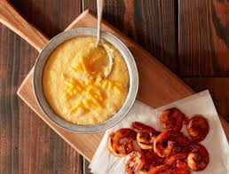

BBQ Shrimps and Grits
Home

Description
NA classic Southern dish featuring tender, smoky BBQ-seasoned shrimp served over creamy, buttery grits.
The grits provide a comforting, smooth base that balances the bold, spicy flavors of the shrimp.
This hearty meal combines rich textures and savory notes perfect for breakfast, lunch, or dinner.
It’s a flavorful taste of Southern comfort food at its finest
Ingredients
- 4 tablespoons olive oil
- ½ yellow onion
- 2 cups grits
- 6 cups water
- 2 ½ teaspoons salt
- ½ teaspoon ground black pepper
- 2 pounds shrimp
- 1 teaspoon smoked paprika
- 2 teaspoons ground cumin
- ½ cup vinegar-based Carolina-style BBQ sauce
- Reynolds Wrap® Heavy Duty Aluminum Foil
Steps
- Preheat the grill to high heat.
- Heat 1 tablespoon of olive oil in a large pot on medium-high heat. Add the onions and brown, about 6 to 8 minutes.
Add in the grits and 6 cups of water and stir over medium-low heat until the grits have absorbed the water
and are cooked through, about 20 to 25 minutes. Whisk the cheese into the grits and season with salt and pepper.
Keep warm.
- Line a hot grill with Reynolds Wrap® Heavy Duty Aluminum Foil.
- Combine the shrimp, paprika, cumin,
and remaining 3 tablespoons of olive oil in a bowl and mix.
- Place the shrimp right onto the foil on the grill and cook for 3 to 4 minutes
on each side or until browned and cooked throughout.
- Pour the BBQ sauce on top of the shrimp and mix.
- Serve shrimp with the cheesy grits.